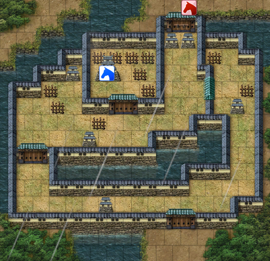

武将.戦争.ヘックス位置
武将.戦争.ヘックス位置とは、
戦争中、画面に表示されているヘックス画面(野戦もしくは籠城戦)において、
武将が居るヘックス(升目)の「位置」もしくは、その位置の役割(山・橋・門等)を得るための
オブジェクトとなります。
ヘックスはゲーム中の機能でも下記のような升目になっていることがわかります。


使用例①
使用例②
武将の位置をとるだけでは、あまり意味がありません。
通常は武将Ａと武将Ｂのヘックス上での間隔などを得るために、
位置をとっているといえるでしょう。
使用例③
武将の具体的な位置に対応する「ヘックスの役割(山・橋・門等)」も
同様の手段で得ることができます。
使用例④
その他、ヘックスの炎上情報や高さ情報なども得ることができます。
その他
武将.戦争.ヘックス位置について、主な解説は以上となります。
詳しくはHD.version.SDKソース内の「戦争_ヘックス.h」や「戦争_ヘックス列挙.h」を参照してみてください。